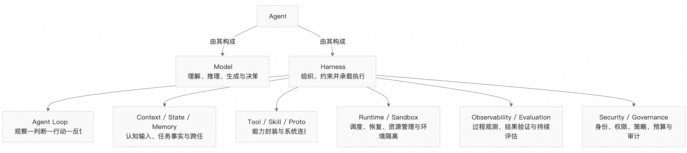

第 1 章 AI 原生应用的新阶段¶
仅仅一年以前，企业构建 AI 应用的起点仍是“如何将大模型接入业务”：应用向模型发送提示词，通过检索增强生成（RAG）补充企业知识，使用工作流（Workflow）串联应用程序接口（API），再将生成结果交给人处理。在这一阶段，模型的主要价值是理解与生成，应用代码仍然掌握完整的执行路径。
过去一年，这一关系开始发生变化。模型不再只是被动调用的生成引擎，而是逐步成为能够维持任务状态、分解目标、调用工具、操作环境，并根据执行反馈调整行为的执行主体。以 Codex、Claude Code、Qoder 为代表的编程智能体（Coding Agent）率先在软件研发中验证了这种应用形态：它们不仅能够给出代码建议，还可以读取代码仓库、维护任务计划、修改文件、运行终端与测试，并在长时间任务中持续接受人的引导。
模型获得更大的任务自主权和环境操作权限，并不意味着模型可以独立构成 Agent。相反，任务越长、工具越多、环境影响越大，模型之外的工程系统就越重要。企业需要系统解决上下文组织、任务状态、工具控制、环境隔离、失败恢复、结果评估和风险约束等问题。这些能力共同构成 Harness，并在工程实现中进一步拆解为 Context、State、Memory、Tool、Skill、Runtime、Sandbox、Observability、Evaluation 和 Governance 等架构能力。
因此，新阶段的 AI 原生应用并不是能力更强的 Chatbot，而是一种新的软件执行形态：Model 负责理解、推理、生成与决策，Harness 负责组织、约束并承载执行，二者共同构成 Agent。本白皮书在讨论应用形态时使用 Agentic Application，强调 Agent 与业务逻辑、数据、工具、环境和用户交互结合，并交付可验证的业务结果。
本章沿两条相互关联的主线展开。第一，应用形态正在从 Chat/RAG、Workflow 和 Copilot 演进到 Agentic Application：其基础形态是由单个 Agent 完成有界任务的 Single-Agent，并可沿时间跨度与协作结构两个方向扩展为 Long-Horizon Agent 与 Multi-Agent。第二，形态演进不等于等级越高越好。企业需要使自主性与任务风险相匹配，并为每类任务选择成本与风险可接受的最低充分架构。前一条主线解释应用能力与系统复杂度如何演进，后一条主线回答企业应当在何处采用何种形态。
1.1 从生成内容到完成任务：AI 原生应用的生产拐点¶
1.1.1 上一阶段的 AI 原生应用¶
上一阶段的 AI 原生应用主要呈现三个特征。
第一，应用以“请求—回答”为主要交互单元。即使加入 RAG、函数调用（Function Calling）或多轮对话，一次调用的边界通常仍较为明确，任务多在秒级或分钟级完成。
第二，执行路径主要由应用代码或 Workflow 预先确定。模型可以承担分类、参数生成或有限的工具选择，但通常不会持有完整的任务循环。
第三，模型的输出主要是内容，而不是外部环境中可验证的任务结果。回答是否流畅，可以通过人的阅读进行判断；但任务是否正确完成，则必须检查工具调用轨迹、文件变更、数据库状态、测试结果或其他环境事实。
这一阶段为 AI 进入企业业务奠定了重要基础。Chat/RAG 使企业知识能够通过自然语言访问，Workflow 使模型可以参与业务流程，Copilot 则通过人的实时判断弥补模型能力与可靠性的不足。但这些应用形态通常依赖两个前提：应用对任务路径具有较强的先验知识，或者人愿意在执行过程中持续参与决策和接管。
1.1.2 Coding Agent 为什么构成拐点¶
Coding Agent 的价值不只在于软件研发本身是一个高价值场景，更在于它集中暴露了 Agentic Application 进入生产必须处理的大部分工程问题。
-
一是代码仓库的规模往往超过模型的单次上下文窗口，Agent 必须对信息进行检索、筛选、摘要与外置存储。
-
二是任务会跨越多个步骤和多次模型调用，Agent 必须维护计划、进度和待办事项。
-
三是工具调用会真实修改文件、运行命令或访问网络，系统必须提供权限控制、环境隔离和不可逆操作审批。
-
四是中间尝试可能失败，执行系统必须支持错误观测、重试、检查点和任务恢复。
-
五是任务结果不能只由模型自评，还需要通过测试、构建、静态检查、文件差异（Diff）或独立评估器进行验证。
-
六是人无法逐 Token 监督 Agent，需要在目标、计划、高风险动作和最终结果等关键节点提供引导（Steering）并实施人在回路（Human-in-the-loop）控制。
Anthropic 的长时任务实践将 Session、Harness 与 Sandbox 分离，使模型循环可以持续演进，同时保持任务事件、执行工具和隔离边界的稳定。OpenAI 的长时工作实践则强调 Durable Thread、可审阅的外部记忆、Skills、Steering 和人工复核。虽然具体实现有所不同，但二者指向了相同的工程结论：长任务并不是简单延长一段对话，而是需要将认知、状态、执行与控制分层，构成能够持续运行的系统。
1.1.3 从专用场景走向通用架构¶
Coding Agent 是 Agentic Application 的重要验证场，但不是其应用边界。能够在工作区中读写文件、调用工具、维持状态、执行长任务并接受人类引导的 Agent，同样可以用于生成并验证研究报告、处理数据分析任务、执行企业 IT 操作、协调客服工单、维护知识库，或在高风险业务中为人提供可验证的执行草案。
这些场景处理的业务对象不同，但对架构能力的要求具有较强的共性，主要包括模型接入与路由、上下文管理、工具与协议、状态与工作区、沙箱与权限、长任务恢复、可观测与评估、安全治理和持续优化。当这些能力在不同应用中反复出现时，它们就会逐步从单一业务应用中抽离，沉淀为通用的 Harness 和 Agent Platform。
| 上一阶段的 AI 原生应用 | Agentic Application |
|---|---|
| 生成一次回答 | 交付一个可验证的任务结果 |
| 单轮或短会话 | 多步骤、有状态，并可扩展为长时与异步执行 |
| 主要由 Prompt 和 RAG 驱动 | 由 Model 与 Harness 共同驱动 |
| 应用代码调用模型 | Agent 在受控边界内使用工具并操作环境 |
| 以输入和输出评估质量 | 同时评估执行轨迹、环境状态和最终结果 |
| 开发完成后上线 | 在运行、治理和评估中持续演进 |
表 1-1 展示了上一阶段的 AI 原生应用与 Agentic Application 在架构重心上的变化
1.2 从 Chat/RAG 到 Agentic Application：应用形态的演进¶
1.2.1 应用形态不是一条简单的替代链¶
随着 Agent 成为产业关注的重点，Chat/RAG、Workflow、Copilot、Single-Agent、Long-Horizon Agent 与 Multi-Agent 容易被理解为一条线性的产品代际演进链，仿佛后一种形态必然取代前一种形态。这种认识忽视了不同任务对确定性、自主性、持续时间、协作结构和风险控制的差异，容易误导企业的技术选型。
这些形态的根本区别，不在于界面是否采用对话方式，而在于任务循环由谁掌握、执行路径在什么阶段确定、系统能够在多大程度上影响外部环境，以及任务是否需要跨会话持续运行或由多个 Agent 分工协作。需要说明的是，Single-Agent、Long-Horizon Agent 与 Multi-Agent 都属于 Agentic Application：Single-Agent 是其基础形态，其中的“单”既指由单个 Agent 持有任务循环，也指任务在明确边界内闭环；Long-Horizon Agent 和 Multi-Agent 则分别沿时间跨度与协作结构两个方向扩展，可以独立采用，也可以在同一应用中组合，并不构成所有 Agentic Application 必须经历的升级阶段。
| 应用形态 | 主要价值 | 任务路径 | 状态与执行跨度 | 人的角色 | 典型适用条件 |
|---|---|---|---|---|---|
| Chat/RAG | 理解、生成与知识访问 | 由应用预先确定 | 单轮或短会话 | 提问、阅读和判断 | 结果主要是内容，不直接改变外部系统 |
| Workflow | 可重复的流程自动化 | 设计时预定，运行时仅有局部分支 | 步骤有限，状态结构明确 | 设计和审批流程 | 任务稳定、路径可穷举、错误代价较高 |
| Copilot | 提升人在回路的工作效率 | 由人持续决定目标和下一步 | 可以跨多轮，但任务控制权在人 | 驾驶、验收并对结果负责 | 专业判断难以完全自动化，但局部工作可以委托 |
| Single-Agent | 由单个 Agent 围绕目标动态完成有界任务 | 由 Agent 在运行时决定部分或大部分路径 | 多步骤、有状态，任务边界明确，通常在一次任务或一个会话内闭环 | 定义目标、约束和关键审批点，验收任务结果 | 路径难以预知，环境可以提供反馈，结果可以验证，且任务能够在有界时间内完成 |
| Long-Horizon Agent & Multi-Agent | Long-Horizon Agent 持续推进长任务；Multi-Agent 通过分工协作完成复杂目标 | 前者根据长期执行反馈动态调整，后者由多个 Agent 通过编排、移交或评审共同决定 | 前者跨会话、跨进程并支持暂停与恢复；后者维护多个角色及其任务状态 | 为长程任务设置检查点与例外处理机制，或为多个 Agent 设定角色、权限和协作边界 | 单个 Agent 受到时间跨度或角色复杂度限制，且引入长程执行或多 Agent 协作的收益能够覆盖新增复杂度；二者可以独立采用或组合使用 |
表 1-2 不同 AI 应用形态的主要差异
1.2.2 Workflow 与 Agent 将长期共存¶
Workflow 的优势是确定性强、易测试、易审计；Agent 的优势是在路径无法穷举时，根据环境反馈进行动态决策。一个企业流程往往同时包含这两类问题。例如，资格校验、账务入账和交易审批适合采用确定性流程；材料理解、异常调查、方案生成和动态工具选择则更适合由 Agent 处理。
因此，企业级应用的主流形态不会是“将所有步骤都交给 Agent”，而是 Workflow 与 Agent 相结合的混合形态（Hybrid）。具体而言，可以在业务 Workflow 中嵌入 Agent，将不确定性限制在清晰的边界内；也可以由 Agent 调用经过测试的 Workflow 或 Skill，将成熟做法从重复推理中抽离。对于低风险、可逆的操作，系统可以赋予 Agent 较高的自主性；对于高风险、不可逆的操作，则需要增加确定性检查和人工审批。
Google 对 Agent 设计模式的总结将顺序执行、并行执行、协调器、层级分解、评审与改进等模式并列，并强调延迟、成本、共享状态和失败传播之间的权衡。这说明，自主性与任务风险相匹配这一原则并不是某个局部控制项，而是贯穿应用形态选择与架构设计的决策原则。它既决定单个任务采用 Workflow、Single-Agent 还是 Hybrid，也决定是否需要将执行跨度扩展为 Long-Horizon Agent，或将协作结构扩展为 Multi-Agent。只有当任务价值、风险和复杂度足以支撑相应的工程成本时，这些扩展才具有必要性。
1.2.3 从单智能体到长程智能体与多智能体¶
当 Single-Agent 从有界任务走向跨会话的持续执行，系统面对的问题会发生变化。模型上下文不能再作为任务事实的唯一载体，进程持续存活也不能成为任务连续性的前提。系统需要通过持久状态、检查点、任务调度、失败恢复和可审阅的外部记忆，使 Agent 能够在上下文压缩、模型切换、人工暂停或执行中断后继续工作。这一扩展形成 Long-Horizon Agent，其核心不是“运行得更久”，而是在更长时间尺度上保持目标、状态、责任和结果的一致性。
当任务跨越多个专业角色、工具权限或组织边界时，将所有能力集中在单个 Agent 中可能带来上下文膨胀、职责冲突、权限过宽和故障定位困难。Multi-Agent 通过顺序、并行、协调器、层级分解、移交或评审等机制，使不同 Agent 在明确的角色和权限边界内协作。其价值不在于增加模型调用数量，而在于让任务分工、上下文隔离、专业能力和相互校验成为可设计的系统结构。
Long-Horizon Agent 与 Multi-Agent 不是同一维度。前者解决任务如何跨时间持续，后者解决多个执行主体如何协作。单个 Agent 可以执行长任务，Multi-Agent 系统也可以只完成短时任务；在研究、研发、运维或复杂业务流程中，二者也可以组合使用。无论采用哪种形态，系统都需要相应增加 Runtime、Sandbox、Observability、Evaluation 和 Governance 能力，并评估额外的延迟、成本、共享状态、失败传播和责任边界。更复杂的形态只有在解决了单 Agent 无法以合理成本可靠完成的问题时才是合理选择。
1.3 Agentic Application 的定义、边界与核心特征¶
1.3.1 定义¶
本白皮书将 Agentic Application 定义为：
Agentic Application 是 Agent 在应用形态层的完整表达：它以 Model 与 Harness 共同构成的执行主体为核心，与业务逻辑、数据、工具、环境和用户交互相结合，能够围绕业务目标维护上下文与状态、动态规划步骤、采取行动，并在确定性边界内交付可验证的任务结果。
以下面的非形式化公式作为理解 Agent 架构的基础：
Agent = Model + Harness
这一公式首先强调责任边界。Model 提供理解、推理、生成与决策能力，但模型本身不能独立承担上下文准备、任务状态维护、工具执行、权限控制、故障恢复和结果验证。Harness 是模型之外用于组织、约束并承载模型驱动任务执行的工程系统。只有二者结合，模型能力才能转化为可持续执行的 Agent。
这一公式不是完整的组件清单，也不意味着 Harness 是不可拆分的黑盒。为了突出模型之外工程系统的重要性，本白皮书在抽象层使用广义 Harness；在工程落地中，则将其进一步拆解为 Agent Loop；Context、State 与 Memory；Tool、Skill 与 Protocol；Runtime 与 Sandbox；Observability 与 Evaluation；以及 Security 与 Governance 等能力。不同产品可以采用不同的组件边界和实现方式，但都需要回答这些能力由谁提供、如何协同，以及如何形成模型不能自行绕过的确定性约束。

图 1-1 从 Agent 基础公式到工程架构拆解
图 1-1 表达的是从抽象共识到工程实现的两层关系：在概念层，Agent 由 Model 与 Harness 构成；在实现层，Harness 被拆解为一组彼此协同的架构能力。在应用形态层，Agentic Application 强调将这一执行主体放入具体业务边界，使其连接业务逻辑、数据、工具、环境和用户交互。后续章节将围绕这些能力说明架构如何设计，以及应用如何构建、运行、治理和调优。
1.3.2 六个判定特征¶
一个应用是否进入 Agentic 阶段，可以通过以下六个特征进行判断。
第一，以目标和任务结果为中心。 用户提供的不再只是一个待回答的问题，而是需要完成的任务和可验收的结果。
第二，在运行时决定部分执行路径。 系统能够根据中间结果、工具返回和环境状态调整后续行为，而不是只执行一条完全预编排的路径。
第三，能够对外部环境产生作用。 Agent 可以调用 API、检索数据、修改文件、运行代码、操作浏览器，或将任务委派给另一个 Agent。
第四，维持跨步骤、跨请求的任务状态。 任务状态不只存在于一次模型上下文中；当任务需要更长时间运行时，还可以暂停、恢复、重试或转交给另一个执行实例。
第五，自主行为受到确定性机制约束。 权限、沙箱、预算、中间件、结构化输出、人工审批和失败处理共同构成模型不能自行绕过的工程边界。
第六，通过可观测与评估持续改进。 系统不仅保存最终输出，还记录执行轨迹、工具调用、状态变化、资源消耗和人工反馈，使新版本能够经过回归、灰度和审批后进入生产。
这六项特征是判断应用架构形态的依据，而不是必须同时启用的功能清单。Agentic Application 不需要在所有任务中采用最高自主性，也不必默认采用 Long-Horizon Agent 或 Multi-Agent，但应当具备在受控边界内将业务目标转化为执行过程的能力。
1.3.3 概念边界¶
为避免将 Model、Agent、Harness、Single-Agent、Long-Horizon Agent、Multi-Agent、完整应用和共享平台混为一谈，本白皮书对相关概念作如下界定。
| 概念 | 在本白皮书中的含义 | 不等同于 |
|---|---|---|
| Model | 提供语言理解、推理、多模态、生成和工具调用决策能力的概率性认知核心 | 完整 Agent 或完整应用 |
| Agent | 由 Model 与 Harness 共同构成，能够围绕目标观察、判断、行动并接受反馈的执行主体；其在应用形态层的完整表达为 Agentic Application | 任意使用模型的软件，或单独的模型调用 |
| Harness | 模型之外，用于组织、约束并承载模型驱动任务执行的工程系统；在落地时可拆解为上下文、状态、能力调用、运行、隔离、观测、评估和治理等机制 | 单一 Prompt、简单 Agent Loop，或某个具体 Agent 框架 |
| Single-Agent | 由单个 Agent 持有任务循环、在明确任务边界内完成有界任务的基础形态 | 需要跨会话持续执行的单个 Agent 应用（属 Long-Horizon Agent），或只调用一次模型、不具备工具与状态能力的对话应用 |
| Long-Horizon Agent | 能够跨多轮、跨会话或跨进程持续执行任务，并通过持久状态、检查点、恢复和人工引导维持任务连续性的 Agent | 单纯扩大上下文窗口，或一次持续时间较长的模型调用 |
| Multi-Agent | 多个具有不同角色、能力或权限边界的 Agent，通过明确的编排、通信、移交或评审机制共同完成任务的系统形态 | 简单并发调用多个模型，或将同一任务机械拆成多个提示词 |
| Agentic Application | Agent 在应用形态层的完整表达，强调其与业务逻辑、数据、工具、环境和用户交互结合并交付业务价值；在形态谱系上涵盖 Single-Agent、Long-Horizon Agent 与 Multi-Agent | 单一模型调用、SDK、Agent 框架或共享平台 |
| Agent Platform | 为 Agentic Application 提供共享设计、构建、运行、治理和优化能力的企业平台 | 单个业务 Agent 或具体 Agentic Application |
表 1-3 Agentic Application 相关概念及其边界
其中有三个边界尤其重要。
首先，Agent 不等于 Agent 框架。本白皮书将 Agentic Application 作为 Agent 在应用形态层的完整表达，二者并非前后递进的两种形态。Agent 框架可以提供 Agent Loop、Tool、Memory 等开发抽象，但框架本身不会自动形成能够围绕目标持续执行、连接业务环境并交付可验证结果的 Agent。企业仍需结合具体场景完成上下文组织、状态管理、工具接入、权限约束、运行保障和结果评估。
其次，Long-Horizon Agent 与 Multi-Agent 不代表天然更高的智能或成熟度。长程执行会增加状态漂移、失败恢复和成本控制难度；多智能体协作会增加通信开销，并带来共享状态、失败传播和责任划分方面的问题。企业应先验证边界明确的 Single-Agent 应用，只有在单个 Agent 受到时间跨度、上下文容量、职责冲突、权限隔离或并行效率限制时，才引入相应的长程或多智能体结构。
最后，应用形态不等于平台形态。Single-Agent、Long-Horizon Agent 与 Multi-Agent 描述任务如何执行，以及执行主体如何跨时间持续或相互协作；Agent Platform 则为多个应用提供共享的构建、运行、治理和调优能力。同一种应用形态既可以依托统一平台运行，也可以采用独立的工程实现；即使平台能力更完整，也不意味着具体应用必须采用长程或多智能体结构。
1.4 从可演示到可运营：企业成熟度与升级判断¶
1.4.1 成熟度不由产品名称决定¶
一个产品即使名称中包含 Agent，也可能只能完成单轮生成；另一个以 Workflow 为核心的系统，则可能已经具备持久状态、权限控制、可观测和持续评估等能力。因此，Agentic Application 的成熟度不能由产品名称或技术标签决定，而应从任务循环、执行跨度、环境影响和生产治理四个维度进行综合判断。
本白皮书将 Agentic Application 的企业成熟度划分为四个级别。该模型是本白皮书基于应用架构维度提出的分析框架，用于判断单个应用的能力形态，不等同于以战略、组织、流程和文化为对象的企业 AI 采纳成熟度模型。
| 成熟度 | 典型应用与运行状态 | 核心能力 | 典型局限 | 升级门槛 |
|---|---|---|---|---|
| L1 辅助生成 | Chat、RAG、基础 Copilot | 内容生成、知识检索、简单工具调用 | 任务闭环由人完成，系统很少维护执行状态 | 建立可复用的 Prompt、知识和基础评测 |
| L2 受控自动化 | Workflow、在 Workflow 中局部使用 Agent | 预定流程、结构化输出、局部动态决策、审批 | 对未知路径和异常情况的适应性有限 | 明确自主边界，引入 Harness、工具策略和轨迹评估 |
| L3 Agentic Execution | 由 Agent 持有任务循环的 Agentic Application（Single-Agent、Long-Horizon Agent 或 Multi-Agent 均可）、Hybrid | 动态规划、工具与环境操作、多步骤任务、持久状态、故障恢复 | 容易在成本、权限、失败放大和版本漂移等方面遇到生产问题 | 建立 Runtime、Sandbox、Observability、Security 和 Evaluation |
| L4 规模运营与持续优化 | 已实现规模化运行、统一治理和持续优化的 Agentic Application | 多任务与多租户运行、策略控制、可观测、安全、离线与在线评估、灰度和持续优化 | 体系复杂，需要平台、组织和治理能力共同演进 | 通过共享平台、组织知识、标准和自动化降低治理成本 |
表 1-4 Agentic Application 企业成熟度模型
L4 描述的是应用规模化运行、统一治理和持续优化的能力水平，而不是一种新的应用形态。Agent Platform 可以为多个应用提供共享的设计、构建、运行、治理和调优能力；企业进入 L4 时，通常需要同时补齐具体应用、共享平台和组织治理三方面的能力。需要区分的是，Single-Agent、Long-Horizon Agent 与 Multi-Agent 都可以处于 L3 或 L4：采用哪种形态取决于任务结构，而处于哪个成熟度取决于运行与治理能力的完备程度。
这四个级别描述了企业应用从辅助生成、受控自动化和自主执行，进一步走向规模化运行与持续优化的能力演进。它们并不意味着每个应用都必须依次升级：低风险的知识助手可以长期停留在 L1，交易审批系统可以选择 L2，以确定性 Workflow 保持核心路径；研发、运维、研究和复杂客服等路径难以预知的场景，可能进入 L3；当应用进入规模化运行，并涉及多任务并发、共享资源、企业数据、多租户或高影响操作时，则需要补齐 L4 所要求的运行与治理能力。
因此，企业应当结合任务价值、风险、运行规模和工程成本，为每类任务选择成本与风险可接受的最低充分架构。这是贯穿本章的决策原则。成熟度模型一方面用于识别应用当前具备的能力，以及进入更高成熟度仍需补齐的运行、治理和优化条件；另一方面也为升级判断提供参照：只有在当前架构无法以可接受的风险和成本交付任务，而新增能力具有明确价值时，升级才有必要。
1.4.2 从成熟度走向架构决策¶
当企业将一个 AI 应用从演示推向生产时，架构设计应当先于具体构建。架构设计不是在组件清单中选择尽可能多的能力，而是根据任务目标、风险、执行跨度、协作边界和运行规模，对参考架构进行裁剪，并确定 Model 与 Harness、确定性流程与自主决策、Single-Agent 与 Multi-Agent、人与系统之间的责任边界。在这一前置决策之后，企业需要依次回答以下五个相互衔接的问题。
-
如何设计架构？ 应采用 Workflow、Single-Agent 还是 Hybrid？是否确有必要使用 Long-Horizon Agent 或 Multi-Agent？任务边界、自主程度、人机协作方式、Agent 分工、确定性控制点和参考架构的裁剪原则应如何确定？
-
如何构建？ Model、Agent Loop、Context、State、Memory、Tool、Skill 和 Protocol 应当如何组合？业务逻辑中哪些部分由 Agent 动态决策，哪些部分应固化为 Workflow、规则或可复用 Skill？
-
如何运行？ 任务如何调度，状态如何持久化，工具在哪种环境中执行，失败后如何恢复，不同任务和租户之间如何隔离？
-
如何治理？ Agent 由谁负责，能以什么身份访问哪些资源，哪些操作必须审批，如何进行观测、审计和异常处置？
-
如何调优？ 如何判断任务结果的质量，如何从 Trace 和反馈中定位问题，如何调整 Model、Prompt、Context、Skill 或 Harness，并通过回归、仿真和灰度验证新版本，在效果不达预期时及时回滚？
这五个问题共同构成企业级 Agentic Application 的主要架构问题。架构设计是构建、运行、治理和调优的前置决策，后四者则形成持续迭代的工程闭环。下一章将给出 Agentic Application 的完整参考架构，说明如何以 Agent = Model + Harness 为基础拆解工程能力，并为后续构建、运行、治理和调优提供统一地图。
1.4.3 从管理软件到管理 Agent：引入操作系统视角¶
前两节回答了企业如何判断成熟度，以及如何在构建之前完成架构决策。但当多个 Agentic Application 进入生产、在同一批机器上长期并发运行时，会浮现一个被 Harness 与 Agent Platform 讨论所掩盖的问题：谁来承载并约束这些 Agent 的运行。这与操作系统当年要解决的问题同形——多个互不信任的程序共享硬件，必须被统一调度、隔离、计量与审计。今天 Agent 成为新的被运行对象，而承载它们的这批公共职责，尚未收敛为一个清晰的层次。
经典操作系统的抽象建立在一个前提之上：程序的执行路径由开发者在编写时确定，因而可预知、可复现、可静态审查。进程是执行单元，文件与内存是状态，系统调用是能力，用户与权限位是授权。正因为路径是确定的，权限可以在进程创建时一次授予、越权即拒；故障恢复可以以进程为单位、退出即回收；审计可以以系统调用为粒度，事后即可还原谁做了什么。
如 1.3.2 的第二个特征所述，Agentic Application 的部分执行路径由模型在运行时决定，这动摇了上述几乎每一个前提。管理职责的名字没有变——仍然是调度、隔离、资源、授权、恢复、审计——但每一项的假设都被改写了。
| 管理维度 | 传统软件（确定性程序） | Agentic Application（运行时决定部分路径） |
|---|---|---|
| 执行单元 | 进程或线程，路径在编写时确定 | 任务运行实例（Run），路径在运行时决定，可跨进程与副本 |
| 状态 | 随进程内存存活，进程退出即释放 | 外置、持久、可恢复，独立于承载实例 |
| 能力接口 | 启动时确定的系统调用与设备 | 运行时动态接入的工具与 MCP 端点 |
| 授权 | 创建时一次性授予，越权即拒 | 每次高影响操作按策略强制判定，且需可撤销 |
| 故障恢复 | 以进程为单位，退出即回收 | 以任务为单位，需检查点、幂等与跨系统补偿 |
| 审计 | 系统调用与文件访问粒度 | 意图、工具调用、环境反馈与结果的关联链路 |
表 1-5 传统软件与 Agentic Application 在管理假设上的差异
其中两点尤其关键。授权不能只在启动时授予，而要在每次高影响操作时按策略强制判定；并且模型可能尝试绕过，边界必须是它无法自行跨越的（见 1.3.2 第五个特征）。恢复也不能只看承载进程是否存活：一个 Run 可能已经挂起等待审批，且已经向外部系统发出副作用，重启并不等于正确恢复（见 1.3.2 第四个特征）。
这些职责正在从单个应用中反复浮现。1.1.3 已经指出，模型接入与路由、上下文管理、工具与协议、状态与工作区、沙箱与权限、长任务恢复、可观测与评估、安全治理和持续优化等能力会在不同应用中反复出现，并逐步从单一业务应用中抽离，沉淀为通用的 Harness 和 Agent Platform。从操作系统视角还可以再进一步：其中一部分并不属于某个 Harness，而属于所有 Agent 共享的承载与治理层。Harness 决定任务在什么上下文、用什么能力、按什么循环执行，承载的是任务语义，因业务而异，不宜下沉；而沙箱的轻量创建与回收、高影响操作在哪里被强制拦截、跨会话记忆与工作区快照、预算与授权如何随子任务派生又能一次性撤销，这类会被多个 Agent 重复实现、且更适合由被约束方之外保证的职责，才是应当收敛的部分。
因此，在 Harness 与硬件之间正浮现一个尚无清晰名字的层次：它不持有任务语义，却为所有 Agent 提供公共的运行对象、能力接入、可强制的边界与统一的证据来源。本书第 22 章称之为 Agentic OS。
这里只给出一个判断：当企业从运行一个 Agent 走向规模化运营多个 Agent 与长任务，即进入 1.4.1 所述的 L4 规模运营与持续优化，缺了这一层，每个应用都被迫各自重造调度、隔离、授权与审计，既重复，也难以相互信任。
有人会问，云平台与 Kubernetes 不是早已提供这些能力。区别在于它们管理的是 Pod 而不是 Run：重启一个探针失败的容器，不等于正确恢复一个已经发出副作用的任务；它们把基础设施调和到一份声明式描述，却不判断任务是否真正且安全地完成。因此云与 Kubernetes 是这一层的底座，而不是它的替代；缺的是把容器、配额与身份访问管理（IAM）翻译成 Run、预算租约与操作记录的 Agent 原生抽象。
这也对应 1.4.2 提出的五个架构问题：如何设计架构与如何构建，主要关乎形态选择与 Harness 的能力组合；如何运行、如何治理、如何调优，则大量落在这一公共层上。第 2 章先给出完整参考架构，第 22 章再回到这一层次，讨论它的雏形、边界与仍然开放的问题。
1.5 本章小结¶
AI 原生应用正在从将模型接入软件进入让 Agent 在受控系统中完成任务的新阶段。Coding Agent 率先验证了多步骤、有状态、能够操作环境的模型系统可以产生真实生产力，其背后的 Harness、Context、State、Memory、Runtime、Sandbox、Observability 和 Evaluation 等工程实践，正在逐步扩展到更多任务和行业。
本章以 Agent = Model + Harness 作为理解 Agent 架构的基础。该公式强调，模型能力只有与组织、约束并承载执行的工程系统结合，才能形成 Agent；在具体落地中，广义 Harness 还需要进一步拆解为 Agent Loop；Context、State 与 Memory；Tool、Skill 与 Protocol；Runtime 与 Sandbox；Observability 与 Evaluation；以及 Security 与 Governance 等架构能力。在应用形态层，本白皮书使用 Agentic Application 强调 Agent 与业务逻辑、数据、工具、环境和用户交互的结合，以及对可验证业务结果的交付。
在应用形态上，Agentic Application 以 Single-Agent 为基础形态，并可以沿两个方向继续扩展：Long-Horizon Agent 将任务从有界执行延伸到跨会话、可暂停和可恢复的持续执行；Multi-Agent 将单一执行主体扩展为具有角色、能力和权限分工的协作系统。三者都属于 Agentic Application，后两者可以独立采用，也可以组合使用，但都不是所有应用必须经历的升级阶段。应用采用何种形态，与其能否被规模化运行、统一治理和持续优化，是两个需要分别判断的问题。
本章同时强调，自主程度必须与任务风险相匹配，企业应当选择能够满足任务目标且成本与风险可接受的最低充分架构。架构设计需要先于构建，并为后续运行、治理和调优确定边界。只有当更复杂的形态和更高成熟度能够解决当前场景的实际问题时，架构演进才具有业务与工程上的必要性。
最后我们还引入了一个视角上的转换：当多个 Agent 长期并发运行，调度、隔离、授权、恢复与审计这些经典的操作系统职责会重新出现，但其假设已被运行时生成的执行路径改写，对于这类不归属任何单个 Harness 的公共职责，我们会在 Agentic OS 一章中详细展开。